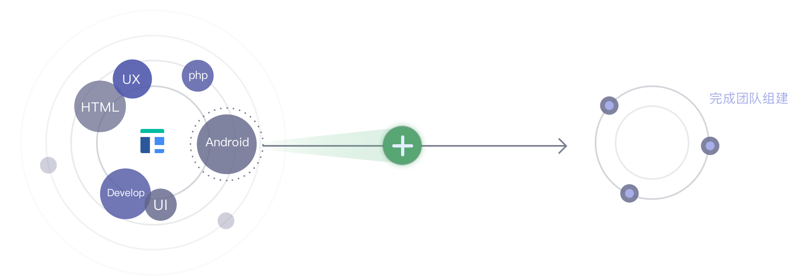

用更优雅的方式完成工作

按需雇佣
按需雇佣
从Toppro选择优秀的人员加入到你的团队开始工作
相比传统雇佣制和项目外包有本质区别
及时响应的服务流程让企业更灵活的使用人才
提出人才需求
申请成为我们合作伙伴后，按照你实际需要做的项目，提出需要雇佣的人才需求，包括人才岗位、数量和能力级别，工作方式，预期的到岗时间和使用时间。
比如A企业成为我们的合作伙伴后，需要做一个iOS的App项目，自己已经对产品有了较为清晰的规划，接下来大体上需要App UI设计师、iOS开发工程师、后端工程师和运维工程师的角色，而其自己的团队已经有后端开发工程师和运维工程师，那就还需要UI设计师和iOS开发工程师。

人才筛选和匹配
Toppro会对提出的人才需求进行分析和评估，综合考虑时间、性价比和合作方式等多种因素，在人才网络中选择并匹配合适的人才，匹配成功后即可工作。
Toppro平台收到A企业的人才需求后，会在人才网络中寻找和匹配最合适的人员，比如选选择1名资深（PD4+）UI设计师，1名高级（PD3+）iOS开发工程师，加入到A企业的技术团队后，开始工作。

协同完成工作
人才匹配完成后，即可成为你团队的一员，和你的团队一起协同工作，及时响应需求、完成工作；记录工作过程和结果对应的有效工作时间，工作量证明申请被确认后，才会支付与之对应的费用。
在Toppro选择的UI设计师和iOS开发工程师和企业原有的后端工程师和运维工程师协同工作，几个角色有很紧密的配合和协作，成为一个有战斗力的团队，一起完成工作；Toppro会对人才的有效产出做审核，企业只需要简单确认即可。

按需灵活雇佣
企业只需要支付完成工作对应的相关费用，其他费用（如培训费用、人员福利等）均不用承担；项目阶段性完成后，结束项目，释放人才资源；有新的人才需求时，再次启动合作。
企业A的iOS项目阶段性（比如v1版本）完成后，可以发布上线运行，此时不需要新的研发工作，就可以将UI设计师和iOS开发工程师资源释放回平台，结束雇佣；等到有新的项目（版本）需要工作，再按照需要雇佣人才即可。

Toppro为您提供安全
Toppro在做什么？
解决企业招募专业技术人才成本高、周期长、管理难度大的问题，满足企业技术人才需要。
如何成为Toppro的入驻企业？
企业在Toppro选择雇主入驻，填写申请表并提交企业资料，通过审核即为Toppro的入驻企业，可以发布您的人才需求。
企业发布人才需求后多久能得到Toppro的响应？
企业发起人才需求后，Toppro的人才经理会在24小时内与企业确定技术要求、工作周期、工作方式和对成果的预期。
Toppro多久能为我的需求匹配到合适的开发者？
需求确认后48小时内，人才经理向企业推荐精准匹配工作要求的优秀开发者，企业可以基于Toppro提供的人才档案和开发者进行沟通并做出雇佣决策。
我还是不太放心，请问Toppro是如何降低企业的雇佣风险？
开发过程中,企业实时收到开发者的工时和报告，系统根据确认的工作量从企业人才账户中划拨费用，可随时延续或结束雇佣关系。
如何保证工程师的工作质量？
雇主、开发者和人才经理通过在线支持系统记录工作量、跟踪工作进度并对工作过程和结果进行周期性的评价，让高水平的开发者保持好的工作状态。
与Toppro的工程师合作的非常愉快，能否长期和他(她)合作呢？
如果您与Toppro的工程师合作很愉快，Toppro可以安排您指定的工程师和企业进行长期持续的合作。
我需要一个研发技术专家组成的技术团队，并且组建时间只有3天,能做到吗？
当项目必须得由2人或者以上的专家人员共同协作完成之时，我们可以依照您的需求来进行团队的组建，保证每一个专家都能够充分的发挥更大。
我的项目工作量并不大，可能只有几个小时，能否在Toppro雇佣到优秀的开发者？
没有问题，不管项目大小您都可以在Toppro雇佣到合适的优秀的开发者，并且Toppro会给您推荐最佳的雇佣方案。